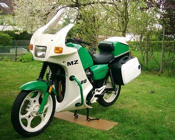

MZ-o marca nemuritoare
MZ s-a dorit dintotdeauna o firma cu produse destinate oricui. Asfel, motocicletele MZ au avut un impact
asemanator masinilor Ford T, prima masina produsa pe banda si accesibila oricui.
Cea mai mportanta reusita a firmei a fost aducerea motocicletelor la indemana oricui, la un pret accesibil,
oferind fiabilitate, perfeormanta si calitate. Motocicletele au devenit astfel nu doar un lux sau o pasiune
excentrica, ci un real mijloc de transport si distractie, accesibil oricui, la preturi mereu avantajoase,
dar si o impecabila prezenta in competitiile moto ale vremii, fie ele de viteza sau teren accidentat
In germania si BMW fabrica motociclete, MZ-ul fiind fratele sau mai mic, dar mai popular.
Motocicletele MZ de dupa anii '50 au fost folosite de navetisti(chiar si navetiste), curieri, oameni de rand
si chiar si de politie, deci e o motocicleta foarte populara.
In ambele razboaie mondiale uzina de la Zschopau a furnizat mototciclete usoare, in 2 timpi, pentru curierat
si transporturi rapide, motoarele grele fiind BMW si Zundapp. Romania, cat a fost de partea Germaniei in
al II-lea Razboi Mondial, a beneficiat de faimoasa DKW 350, care au avut o influenta decisiva in atacuri si
interventii rapide. Editia destinata armatei avea atas cu mitraliera, o arma foarte eficienta in deplasari
in graba.

MZ ETZ 300, 1991, care datorita puterii, fiabilitatii si a intretinerii usoare, a ajus dotare standard a politiei
nemtesti. ETZ-ul politiei era escorta coloanelor oficiale de atunci...
MZ ES 175, 1960-1967, comoda si silentioasa, folosita de navetisti si excursionisti, usoara, fiabila, silentioasa
si foarte comoda. Avand un sfert din pretul unei masini, era o alternativa reala ca mijloc transport personal.
MZ ETS 400, 1969, facea fata cu brio la cele mai grele incercari pe teren accidentat, destinata competitiilor.
MZ RZ 250, 1947, cea mai sportiva motocicleta a vremii. A detinut un timp recordul mondial de viteza pe 2 roti,
la clasa 250cmc, de 245km/h... uimitor si pentru standardele de astazi!
MZ BK 350, 1951, a fost folosit si in armata, dar nu a existat o editie destinata doar in acest scop
DKW 350, 1935, in editie militareasca. Toata armatele aliate nemtilor o aveau in dotare, fiind fabricate peste 100.000
de bucati doar pentru armata.